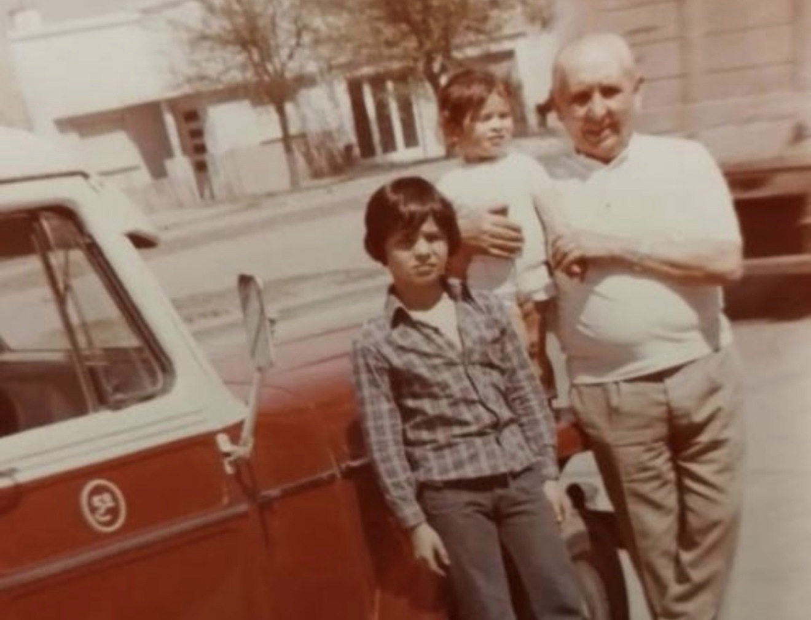
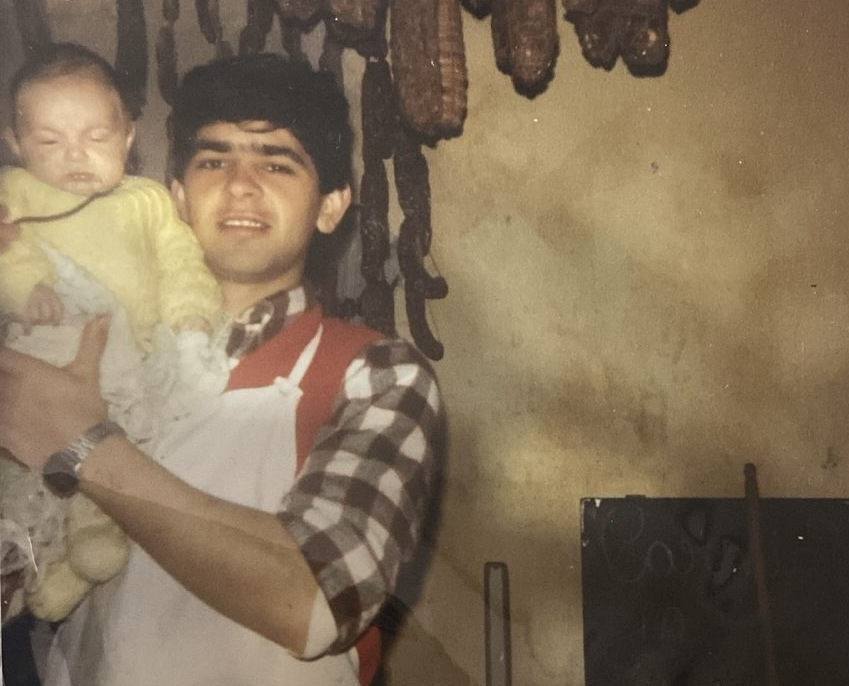
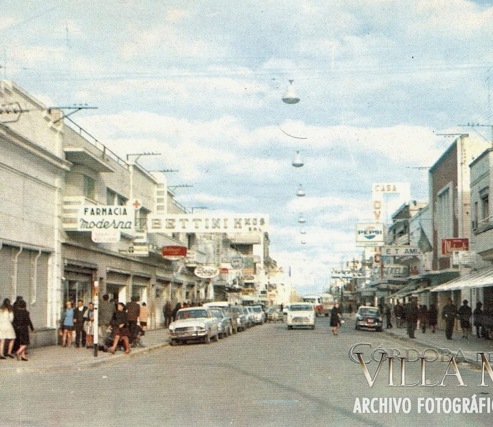
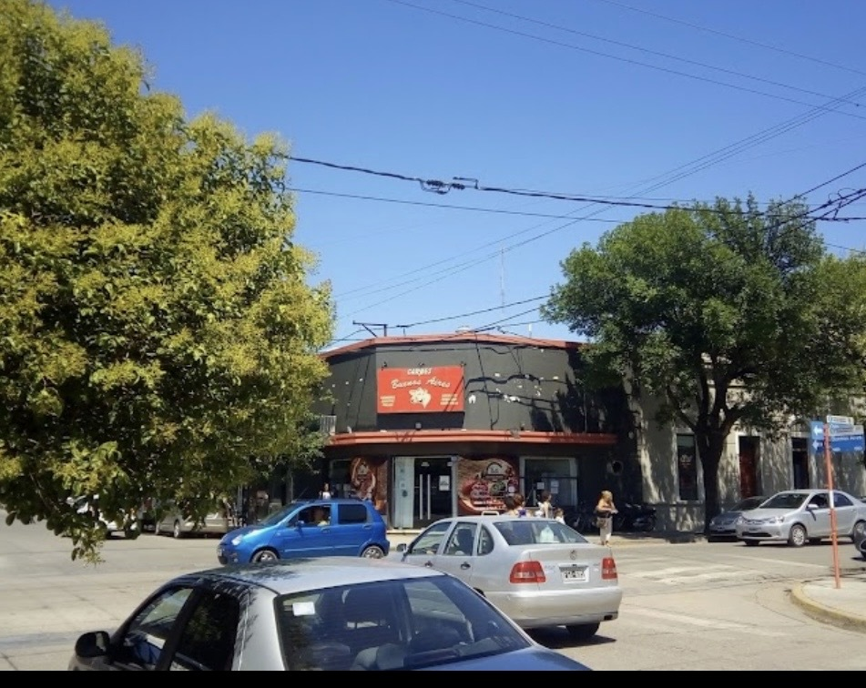
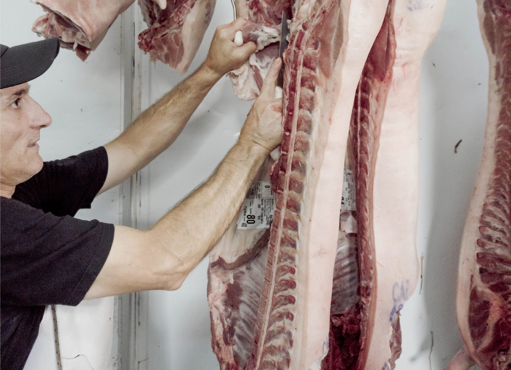
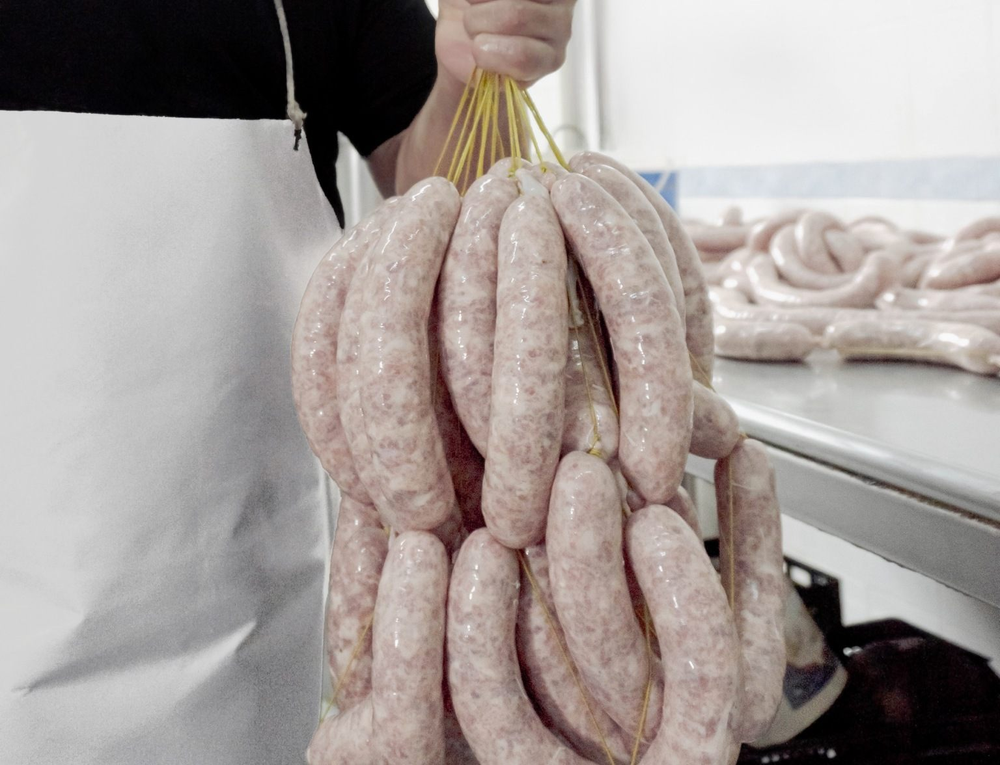
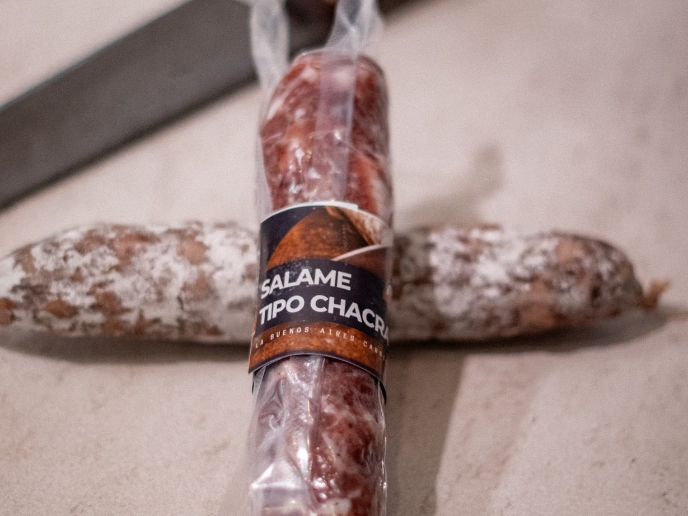

El origen
se nota.
Carne, oficio y una receta que se hereda.

Don Barcia
El oficio antes que la marca.
A las generaciones que nos regalaron la pasión por la carne y el valor de la calidad.
Dedicado al rubro frigorífico, su labor dejó una huella profunda: constancia, respeto por la materia prima y pasión por la carne. Valores que siguen presentes en cada decisión que tomamos hoy.

La receta
ya estaba ahí.
Embutidos propios. Mucho antes del mostrador.
Esta fotografía registra algo que hoy define a La Buenos Aires: elaborar con conocimiento propio. La receta no nació como una estrategia comercial; nació en la familia.
Claudio Alejandro
Farias
La idea que transformó el legado en empresa.
Claudio Alejandro Farias fue el creador de la idea y fundador del proyecto que hoy conocemos como La Buenos Aires. Tomó una historia familiar ligada a la carne y la convirtió en una empresa con identidad propia.
En su recorrido, la experiencia comercial de Héctor Farias también acercó una mirada empresarial del rubro y alimentó esa pasión por el mundo de la carne.
Hoy, junto a sus hijos,
impulsa la próxima etapa.

Una esquina.
Una idea diferente.
Ir en sentido contrario también puede ser una visión.
En aquellos años no era habitual pensar un nuevo modelo de carnicería en plena zona céntrica. La lógica comercial parecía indicar otro camino. Claudio Alejandro Farias eligió desafiar esa idea y apostar por una esquina donde pocos imaginaban un negocio de carne con otra presencia y otra propuesta.

Nuestro
primer local.
La decisión se convirtió en realidad.
Donde otros podían ver una ubicación poco convencional para el rubro, Claudio vio una oportunidad. En esa esquina abrió la primera sucursal del proyecto que, con los años, sería reconocido como La Buenos Aires.
Una historia que sigue.
Actualmente, Claudio Alejandro Farias y sus hijos lideran nuevas ideas de negocio que combinan experiencia, nuevas generaciones y una misma obsesión: que la calidad sea reconocible.
Crecer sin perder el origen.

No elegimos
solo el corte.
Elegimos desde el origen.
Participamos en la selección y el abastecimiento de la materia prima que comercializamos y utilizamos en nuestras elaboraciones. Del campo al producto final, buscamos conocer lo que ofrecemos.

No todo se
puede copiar.
Hay sabores que necesitan tiempo.
Las recetas se fueron perfeccionando con los años, pero conservaron algo esencial: la memoria de quienes las hicieron antes. Ese conocimiento es parte de lo que hoy diferencia nuestros productos.

Salame
tipo chacra.
No es solo un salame. Es una historia en el mostrador.
Una receta familiar de perfil tradicional, elaborada para quienes buscan sabor, identidad y un producto con una historia real detrás.
 La Buenos Aires mayorista
La Buenos Aires mayorista
Seleccioná un producto
que tenga algo que contar.
Porque algunas recetas se escriben.
Otras se heredan.
Para fiambrerías, almacenes, autoservicios, distribuidores y gastronomía que buscan diferenciar su mostrador con un producto de origen, identidad y respaldo.